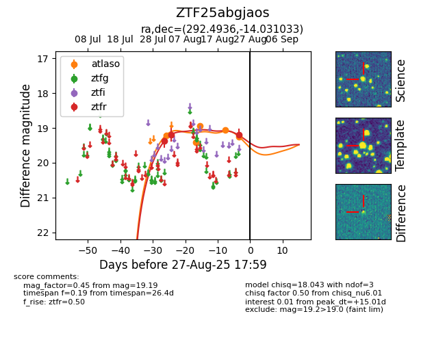

Target ZTF25abgjaos at 2025-08-27 17:59, see:
FINK: fink-portal.org/ZTF25abgjaos
Lasair: lasair-ztf.lsst.ac.uk/objects/ZTF25abgjaos
ALeRCE: alerce.online/object/ZTF25abgjaos
alt names
ZTF25abgjaos (ztf,fink)
coordinates:
equatorial (ra, dec) = (292.4936,-14.03103)
galactic (l, b) = (24.5026,-14.77673)
photometry
last atlaso=19.25, ztfr=19.19
5 atlaso, 3 ztfr detections
